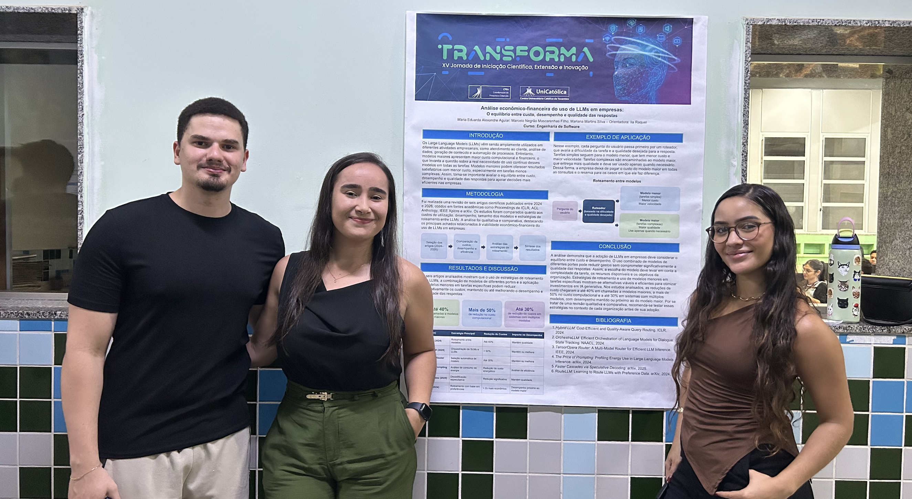
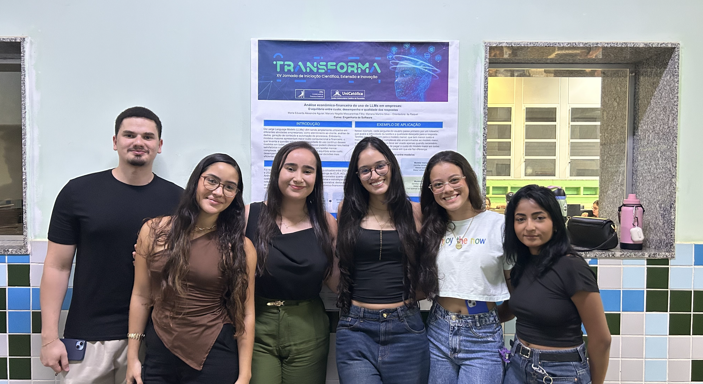
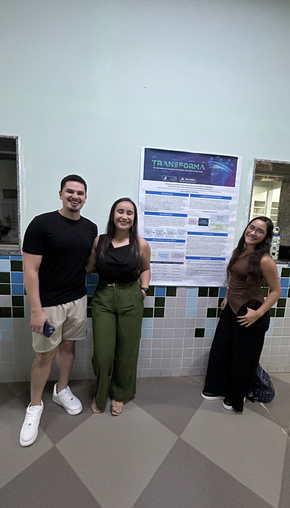

INTELIGÊNCIA ARTIFICIAL E ECONOMIA
Análise Econômica e Financeira do Uso de LLMs em Empresas
Pesquisa analisa como os custos e o desempenho dos modelos de linguagem podem influenciar as decisões das organizações.
ConeTech | 2026
Por Bruna Guedes, Camila Gonçalves e Giovana Florentino | 07/10/2026

O que a pesquisa investiga?
Os modelos de linguagem de grande escala, conhecidos como LLMs, estão sendo utilizados em diferentes atividades empresariais. Eles podem auxiliar na produção de textos, na análise de informações e na automatização de tarefas.
O projeto analisa a viabilidade econômica e financeira da utilização dessas tecnologias, considerando fatores como custos, desempenho e qualidade das respostas.
O desafio para as empresas
A escolha de um modelo de inteligência artificial não depende apenas de sua capacidade técnica. Modelos mais avançados podem apresentar custos maiores, o que exige uma avaliação cuidadosa antes de sua implementação.
Para tarefas simples, uma alternativa mais econômica pode atender às necessidades da empresa. Já atividades complexas podem exigir modelos com maior capacidade de processamento e respostas mais elaboradas.
Quem pode se beneficiar?
A pesquisa é relevante para empresas, empreendedores, investidores e profissionais responsáveis pela escolha de ferramentas tecnológicas. Essas pessoas precisam considerar tanto os benefícios quanto os gastos envolvidos na adoção da inteligência artificial.
Professores, estudantes e a comunidade em geral também podem utilizar os resultados como referência para compreender melhor a relação entre tecnologia e economia.
Soluções semelhantes no mercado
Uma solução que pode ser considerada nessa comparação é a API da OpenAI, que permite utilizar modelos de linguagem e apresenta preços de acordo com o uso. Isso ajuda as empresas a estimar parte dos gastos envolvidos na utilização dos modelos.
Outra opção é o Vertex AI, do Google Cloud, que oferece modelos de IA generativa com preços próprios. As duas alternativas mostram que o custo precisa ser analisado junto com a tarefa realizada, a qualidade das respostas e o volume de utilização.
Importância e possíveis melhorias
Um dos pontos positivos da pesquisa é abordar uma questão importante para empresas que desejam utilizar inteligência artificial sem comprometer seu orçamento. A análise dos custos ajuda a tornar a decisão mais consciente.
Como possibilidade de melhoria, o estudo poderia incluir comparações práticas entre modelos, com testes de custo, tempo de resposta e qualidade para diferentes atividades. Isso ajudaria a aproximar a pesquisa das situações enfrentadas pelas empresas.
Galeria de imagens


Equipe do projeto
O projeto foi desenvolvido por: Maria Eduarda Alexandre Aguiar, Marcelo Negrão Mascarenhas e Mariana Martins Silva.
Autorização para publicação
As fotografias publicadas nesta página foram autorizadas pelos responsáveis.